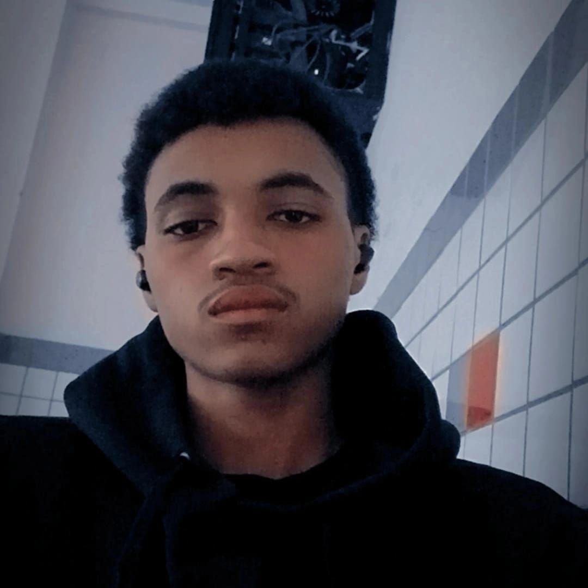

2023
Ensino médio
Instituto Federal do Piauí
Conclusão do ensino médio.
Engenharia de Software • Inteligência Artificial • Automação • Logística
Da experiência na operação logística ao desenvolvimento de soluções tecnológicas.

Sobre
Minha trajetória começou na área de logística, onde desenvolvi experiência prática com operações, auditoria, conferência, organização, estoque e processos. Essa vivência despertou meu interesse em encontrar formas de utilizar tecnologia para tornar processos mais eficientes, confiáveis e inteligentes.
Atualmente curso Engenharia de Software e direciono meus estudos para desenvolvimento de software, automação, inteligência artificial, visão computacional e ciência de dados. Meu objetivo é unir experiência prática e conhecimento tecnológico para transformar problemas reais em soluções funcionais, úteis e escaláveis.
Minha trajetória
Ensino médio
Conclusão do ensino médio.
Logística
Auxiliar de Logística.
Engenharia de Software
Início da graduação em Engenharia de Software, com foco em desenvolvimento de software, automação, inteligência artificial, visão computacional e ciência de dados.
Projetos e tecnologia
Minha experiência prática na operação despertou o interesse em utilizar tecnologia para criar soluções mais eficientes. A partir desse conhecimento, passei a desenvolver projetos pessoais em inteligência artificial, automação e visão computacional.
Projetos
Assistente virtual em desenvolvimento, capaz de receber comandos, responder ao usuário, utilizar memória e executar funções por meio de interação por voz e texto.
Explorar maneiras mais naturais e úteis de interação digital para usuários comuns.
Criação de uma assistente pessoal com reconhecimento de voz e respostas automatizadas.
Python, SpeechRecognition, Edge-TTS, JSON
Aplicar IA e automação em uma experiência mais humana e funcional.
Em desenvolvimento.
Sistema experimental de visão computacional voltado para interação humano-computador por meio do reconhecimento de mãos e gestos.
Buscar formas mais intuitivas de interação além de teclado e mouse.
Uso de OpenCV, MediaPipe e CVZone para rastrear gestos e sinais visuais.
Python, OpenCV, CVZone, MediaPipe
Explorar interação por visão computacional em tempo real.
Experimental.
Projeto voltado ao apoio de operações logísticas por meio do uso de tecnologia, visão computacional e classificação para identificação e análise de processos.
Melhorar a análise e organização de informações em ambientes operacionais e logísticos.
Criação de um sistema de apoio à operação com análise visual e classificação automatizada.
Python, OpenCV, IA, Visão Computacional, Automação
Aplicar tecnologia para otimizar operações e reduzir inconsistências.
Em desenvolvimento.
Competências
Certificações
Curso voltado aos fundamentos de automação de sistemas, envolvendo conceitos de automação, robótica, máquinas e redes aplicados ao contexto industrial e tecnológico.
Curso introdutório aos fundamentos da Ciência de Dados, análise de informações e Big Data, explorando a importância dos dados e seu uso para apoiar decisões.
Formação complementar relacionada à manutenção de computadores e conhecimentos fundamentais de hardware.
Formação introdutória em logística, fortalecendo conhecimentos relacionados aos processos e operações logísticas.
Formação complementar relacionada à logística e administração de materiais.
Formação complementar em gestão de equipes e desenvolvimento de competências.
Contato
Estou aberto a oportunidades, projetos, colaboração e conexões nas áreas de tecnologia, desenvolvimento de software, automação e soluções inteligentes.